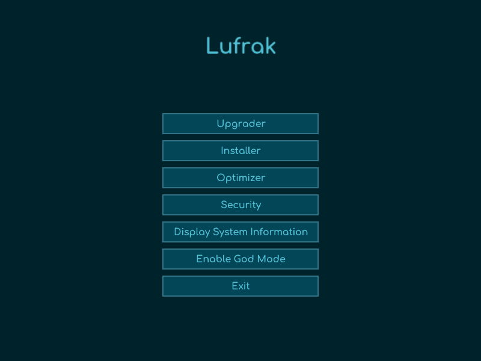

What is Lufrak?
Lufrak is your go-to program for quickly and effortlessly setting up and optimizing your Windows 10/11 computer. Say goodbye to the hassle of manual configurations and tedious optimizations. Lufrak streamlines the process, making it fast and convenient for users of all levels.
